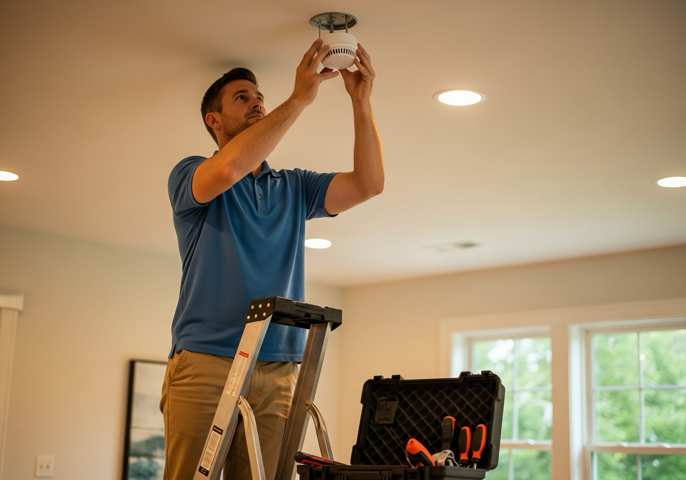
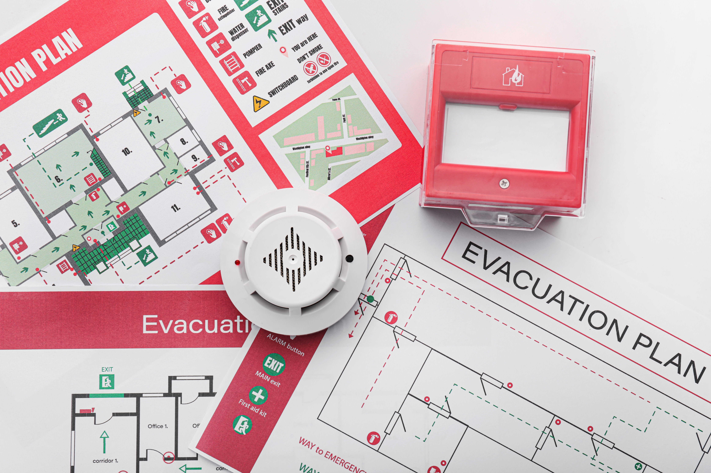

Jaarlijks onderhoud en keuring
Alle brandblusapparaten en muurhaspels conform de NBN S 21-050 en NBN EN 671-3 normen (alle merken van alle leveranciers)

Er is niets erger dan denken dat je veilig bent om dan te merken dat het toestel waarop je zo hard vertrouwt om je te beschermen niet werkt.
Voor de veiligheid van je gebouwen en de mensen die erin werken en/of wonen is het van het allergrootste belang dat je alle aspecten van je brandbeveiliging jaarlijks laat controleren en keuren.
Brandblussers in openbare en professionele omgevingen, zoals winkels, bedrijven, restaurants, hotels, B&B's en gemeenschappelijke delen van appartementen, moeten jaarlijks gekeurd worden. Voor privégebruik is er geen verplichte keuring.
Alle brandblusapparaten en muurhaspels conform de NBN S 21-050 en NBN EN 671-3 normen (alle merken van alle leveranciers)


Brandblusapparaten kunnen door ons ook hervuld, hersteld, herkeurd of door een milieuvriendelijk exemplaar vervangen worden. Al onze contracten zijn bovendien jaarlijks opzegbaar. Zo dwingen we onszelf om te blijven vernieuwen, telkens opnieuw de lat hoger te leggen en jou de beste service te blijven geven.
Het jaarlijkse onderhoud moet uitgevoerd worden door een gecertificeerd bedrijf volgens de norm NBN S21-050.
Als gecertificeerd keuringsbedrijf door Apragaz voeren wij keuringen uit voor brandblussers, ongeacht de plaats van aankoop. Dit zorgt ervoor dat je niet alleen voldoet aan alle wettelijke eisen, maar ook dat je brandblussers op de meest grondige manier worden geïnspecteerd. Zo ben je verzekerd van optimale brandveiligheid en volledige naleving van alle relevante wet- en regelgeving.
Bescherm je gebouwen en mensen en zorg ervoor dat er in geval van brand adequaat, snel en in alle vertrouwen kan gereageerd worden.